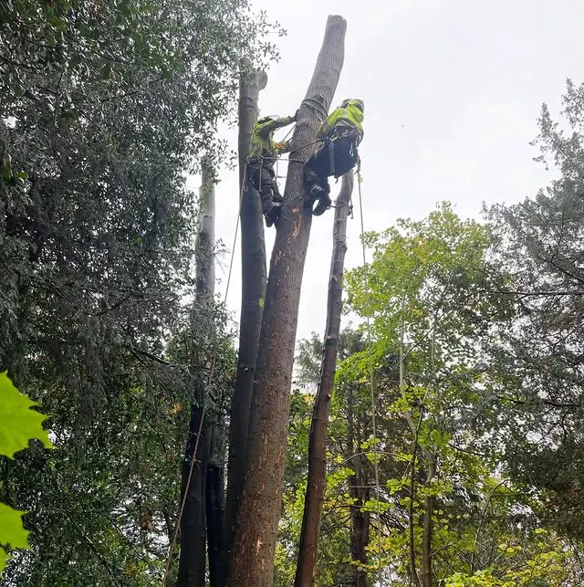
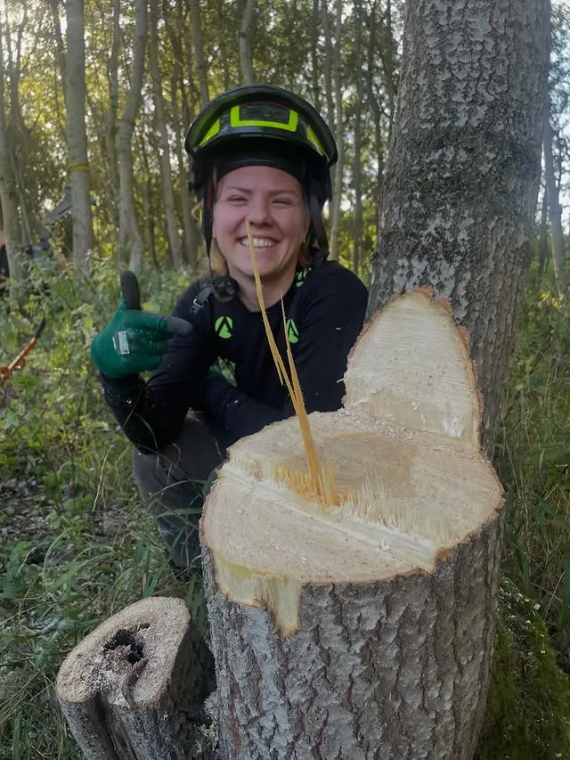
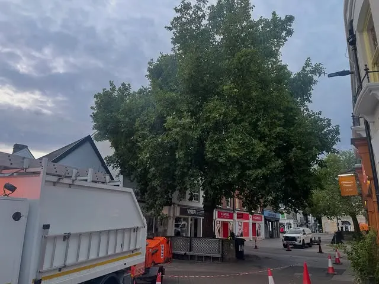
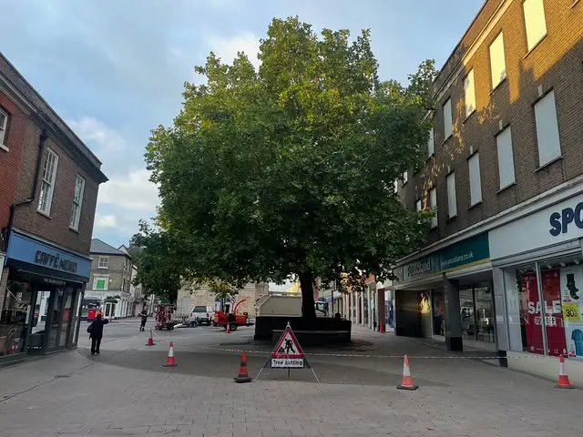
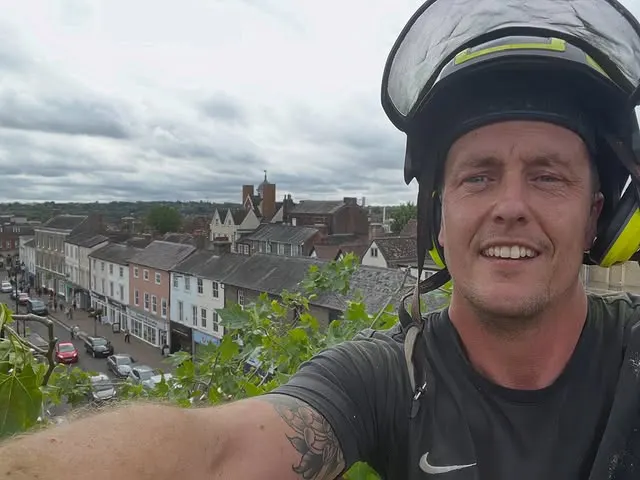
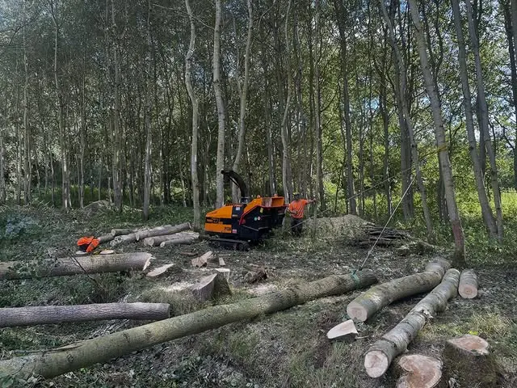

West Suffolk · Bury St Edmunds
Tree surgeons, out in the trees every day.
A bunch of tree surgeons smashing it out across West Suffolk — felling, pruning, pollarding and crown work, from town-centre London planes to nature-reserve poplars.

What the crew does
Every service below is work shown on MJC’s own Instagram — nothing added.
Tree felling
Felling all day, including a strip of poplars out of Ram Meadow nature reserve, winched out with the chipper.
Pruning
Day-after-day pruning work — including three days pruning the London planes in the Butter Market, Bury St Edmunds.
Pollarding
Re-pollarding previous pruning points, alongside reducing, thinning and crown lifting.
Crown lifting & reduction
Crown lifting trees that have been heavily cut before, and reducing crowns back into shape.
Thinning
Thinning and crown work as part of a mixed pruning approach, tree by tree.
Town & reserve trees
Work in both settings — town-centre planes in the Butter Market, Bury St Edmunds, and felling in Ram Meadow nature reserve.
Recent work
Photos and captions from MJC’s own Instagram posts.





West Suffolk, tree by tree
MJC’s posts run from Bury St Edmunds town trees to nature-reserve felling — the same crew, the same hands-on approach, whatever the tree.
Where they work
West Suffolk, including Bury St Edmunds. The Butter Market planes and Ram Meadow jobs are both recent, local work.
Got a tree that needs a crew?
Find MJC on Instagram and message them about your tree.